레이더 개발 이야기 (11) - 항공기 탑재용 레이더의 난관들
게시: 2022-12-01T06:30:00+09:00
<고정관념을 버려!> 1935년 로열 에어포스의 레이더 연구팀이 발족되면서, 그 팀장인 왓슨-왓(Robert Watson-Watt)이 직접 뽑은 5명의 연구원 중 한명이 흔히 'Taffy' (웨일즈 사람이라는 뜻인데 다소 멸칭으로 쓰임, 한국어 느낌으로는 경상도 문딩이 전라도 하와이 정도의 어감)라고 불렸던 보웬(Edward George Bowen, 아래 사진). 당시 24세의 새파란 젊은이였던 보웬은 바로 작년에 박사 학위를 딴 상태였는데, 박사 학위 과정에서 전파 방향 탐지 관련한 연구를 진행하다 왓슨-왓의 눈에 들었던 것.
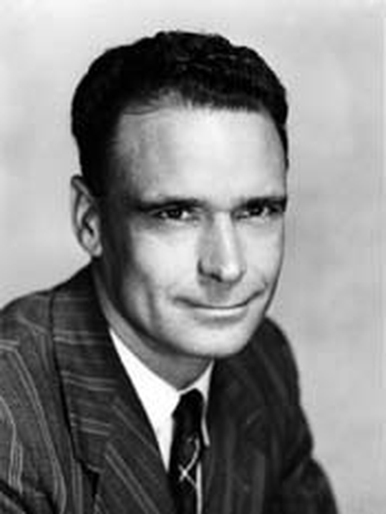
지상 레이더, 즉 Chain Home 시스템 연구가 어느 정도 진행되자 젊은 보웬은 곧 항공기에 장착할 레이더가 필요하다고 생각하고 스스로 항공 레이더 연구팀으로 옮겨 거기에 매진. 그가 주도한 항공기용 레이더 연구팀은 RDF (Radio Direction Finder) 2라고 불렸고, 자연스럽게 기존의 지상용 체인홈 레이더 연구팀은 RDF 1이라고 부르게 됨. 그는 왓슨-왓의 기대를 저버리지 않는 훌륭한 연구원이었음. 가령 다우딩(Hugh Dowding) 장군에게 레이더 연구 성과를 데모로 보여주던 날 데모가 실패로 끝나고 다우딩 장군 얼굴이 붉으락푸르락 해지자 자신이 연구 중이던 RDF 2 레이더를 이용한 즉석 데모를 시전하여 다우딩을 만족시켰다고. 덕분에 이 시스템은 RDF 1과 RDF 2의 중간이라고 해서 RDF 1.5라고 불림. 그런 보웬에게도 항공기용 레이더는 결코 쉽지 않은 과제. 전에 언급한 대로 육군 방공포용 1.5m 안테나를 이용한 송수신기를 기반으로 시작했음에도, 난제가 너무 많았음. 전기를 많이 먹는 레이더파 송신기를 운용하려면 당시의 빈약한 항공기용 발전기부터 문제가 되었고, 고도 수km의 차가운 대기 속에서 끊임없는 심한 진동에 노출되는 것은 당시의 진공관 장치들에게는 너무나 열악한 조건. 그러나 보웬은 레이더파 송신기와 수신기를 다 갖춰야 한다는 고정관념에서 과감히 탈피함으로써 1차 관문을 돌파. 즉, 일단 무게가 많이 나가고 전기도 많이 먹고 고장도 잘 나는 레이더파 송신기를 과감히 빼고, 수신기만 장착한 항공기용 레이더를 만든 것. 어차피 항공 레이더는 야간 전투기에 장착될 물건인데, 야간 전투기의 목표는 영국 영공 방어니까 지상에 즐비한 Chain Home 레이더의 송신파를 쉽게 이용할 수 있었던 것. 실제로 해보니 수신기만 갖춘 야간 전투기는 체인홈 레이더의 전파를 반사한 모의 적기를 매우 훌륭하게 포착. 의기양양한 보웬은 왓슨-왓에게 이 결과를 보고하며 즉각 양산에 들어가자고 주장했으나 왓슨-왓에게 대차게 까임. 왜?
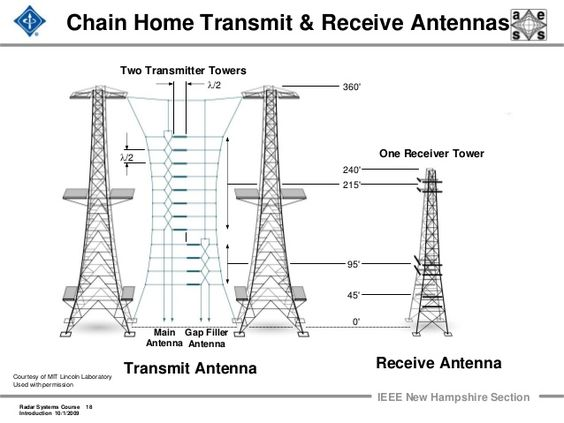
(체인홈 레이더 시스템의 송신탑과 수신탑. 이런 거대한 것을 항공기에 우겨넣으라는 것은 미친 짓...)
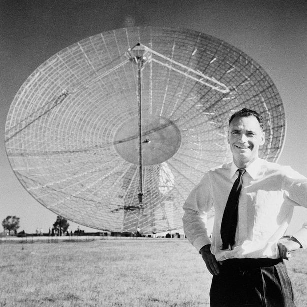
(참고로 보웬은 전쟁 이후에도 전파 망원경을 만드는 등 민간 부문에서도 큰 공을 세우며 훌륭한 삶을 살았음)
<한쪽만 보는 레이더> 왓슨-왓은 보웬이 만들어온 수신기만 있는 항공기 레이더 세트를 보고는 '처음부터 다시 만들어 와'라고 집어던짐. 보웬이 지상 레이더인 Chain Home 송신기에 의존하여 수신기만 있는 항공기 레이더를 만든 이유는 '어차피 이건 영국 방어용으로만 쓸 야간 전투기용'이었기 때문. 즉 항상 Chain Home 레이더의 범위 안에서만 싸우게 된다는 것이 전제 조건. 역설적으로 왓슨-왓이 집어던진 이유도 야간 전투기에 탑재할 물건이었기 때문. 당시 Chain Home 레이더는 요즘처럼 빙글빙글 돌아가며 사방을 감시하는 물건이 아니라, 정면만 주시하는 레이더. 그리고 조기 경보가 주요 기능이었으므로 최대한 일찍 독일 폭격기를 탐지하기 위해 해안가에 주르르 세워놓음. 즉, 일단 해안가에 늘어선 체인홈 레이더 경계선을 통과하기만 하면 독일 폭격기들은 레이더 감지 범위를 벗어나게 되는 것.

체인홈 레이더는 왜 그딴 식으로 만들었을까? 낮에 영국 영공 안에 들어온 폭격기들은 지상 감시요원들의 눈에 잘 보였으므로 구태여 레이더가 필요없었던 것. 전투기들은 지상 감시요원들의 '여보세요? 거기 공군이죠? 여기 독일 폭격기가 떴는데요' 라는 신고 전화를 받고 출동하면 되었음.
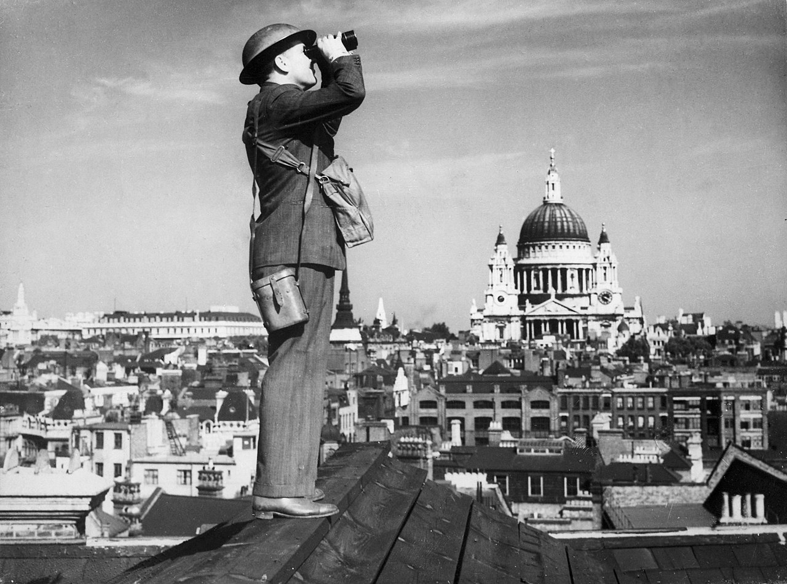
(도시락을 싸가지고 다니며 하늘을 지킨 지상 감시요원들은 매우 중요한 감시 자산이었으며, 이들은 적기 출현시 실제로 전화로도 신고를 했다고.)
그러나 야간 전투기는 이야기가 달랐음. 밤에는 전투기 조종사건 지상 감시요원이건 아무 것도 볼 수가 없었음. 아직 체인홈 레이더 전파 속인 바다 위에서 다 격추해버릴 수 있다면야 보웬이 만들어온 수신기만 있는 레이더로도 충분히 쓸모가 있었으나, 대낮에도 그게 제대로 안되는데 깜깜한 밤중에 그게 가능할 리가 없음. 독일 폭격기는 어떻게든 해안선만 넘으면 밤의 어둠 속으로 숨어버릴 수 있는 셈이므로 야간 전투기에는 레이더 수신기 뿐만 아니라 레이더 송신기도 반드시 탑재해야 했음. 그럼에도 불구하고 보웬은 '아직 항공기용 레이더 개발의 완성이 요원한 상태에서, 수신기만 탑재한 야간 전투기용 레이더라도 먼저 양산하여 향후 개발될 제대로 된 항공기용 레이더의 조작 훈련용으로도 썼다면 훨씬 좋았을 것'이라며 아쉬워 했다고.
<전기는 어떻게?>
보웬이 수신기만 갖춘 공대공 레이더를 만든 이유는 여러가지이지만 중요한 문제 중 하나는 전기. 간단한 대공포용 레이더조차 수십 kW의 전력을 필요로 했는데, 당시 항공기들의 발전기는 그런 막대한 전력을 생산할 수 없었음. 심지어 수신기만 갖춘 레이더에조차 전기를 대는 것이 만만치 않았음.
보웬이 만든 수신기만 갖춘 레이더를 공중에서 시험해보기 위해 사용한 항공기는 구닥다리 Handley Page Heyford 복엽식 폭격기 (아래 사진)
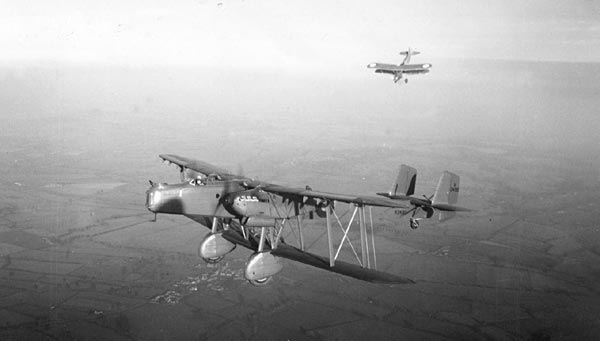
(Handley Page Heyford는 마치 WW1 당시 활약한 폭격기 같지만 의외로 1934년 도입된 것으로서, 1936년 당시로서는 상당히 최신식 폭격기. 그러나 단엽기에 의해 재빨리 대체되어 결국 WW2에서 활약하는 일은 없었음. 훈련기와 공수부대 글라이더 견인기 등으로 사용됨.)
보웬은 당시 사용하던 3.5m 짜리 수신 안테나를 어떻게 설치하나 고민하다 저 헤이포드 폭격기의 고정식 랜딩 기어 지지대 사이에 걸쳐 안테나를 설치. 수신기에도 전기는 필요했는데 저 쌍발 엔진 폭격기에서조차 충분한 전기를 얻지 못함. 어쩔 수 없이 저 폭격기의 바닥에 건전지를 잔뜩 싣고 올라가서 그것으로 전원을 해결했다고.
실험용 장치는 그런 식으로 해결이 가능했지만 그건 어디까지나 임시방편이었고, 전파 발신기까지 갖춘 진짜 공대공 레이더를 장착하기 위해서는 발전기 문제가 꼭 해결되어야 했음.
<Generator나 alternator나 다 같은 발전기 아닌가?> Generator나 alternator나 둘 다 우리 말로는 발전기라고 번역되고 둘다 회전 운동을 전기로 전환하는 역할을 하지만 다른 점들이 꽤 있음. 가장 큰 차이는 generator는 전기 에너지가 유도되는 armature (전기자)가 회전하고 자석이 고정되어 있는 것에 반해, alternator는 armature가 고정되어 있고 자석이 회전하는 것. 그러나 실제 사용에 있어 중요한 것은 generator는 일반적으로 무겁고 효율이 나쁘지만 교류(AC) 뿐만 아니라 직류(DC)도 만들 수 있고, alternator는 가볍고 효율이 더 좋은 대신 교류만 만들어낸다는 것. 게다가 제너레이터는 얼터네이터에 비해 마모가 심해서 빨리 고장났음. 이는 마찰링(slip ring)의 차이 때문. 제너레이터나 얼터네이터나 모두 만들어진 전기 에너지를 회전축으로부터 뽑아내기 위해 브러쉬(brush)와 접촉하는 마찰링(slip ring)을 썼는데, 제너레이터는 본질적으로 먼저 만들어지는 교류를 직류로 바꿔주는 정류자(commutator) 역할을 위해 마찰링(slip ring)이 반으로 갈라진 split ring을 써야 했고, 그 갈라진 부분에 브러쉬가 닿으면서 마모가 훨씬 더 빨리 일어났기 때문 (그림1).
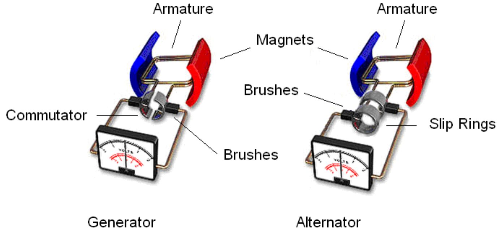
딱 봐도 자동차나 항공기에서는 제너레이터보다는 얼터네이터를 사용하는 것이 더 나음. 실제로 현대식 자동차들은 모두 얼터네이터를 사용. 하지만 WW2 초기까지 항공기 뿐만 아니라 일반 자동차들은 모두 얼터네이터가 아닌 제너레이터를 사용. 왜? 당시 제조 기술로는 자석이 고정된 제너레이터 생산이 훨씬 쉬웠고, 자동차에서 사용되는 계기판과 조명 등은 모두 직류를 이용했기 때문.
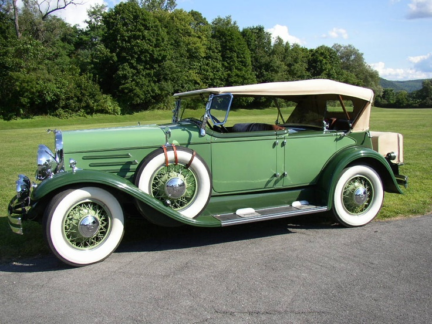
(그러니까 위대한 개츠비가 몰던 이런 자동차에는 모두 얼터네이터 대신 제너레이터가 사용되었다는 이야기)
이는 당시 항공기도 마찬가지. WW2 시절 항공기에서는 전기라고 해봐야 무전기와 조명, 각종 계기판, 밸브 개폐 관련 정도 밖에 없었으므로 강력한 발전기가 필요하지 않았음. 당시 프로펠러 전투기 등은 엔진 시동을 걸 때 나름 전력을 많이 쓸 것 같지만 대부분 시동걸 때는 특별 제작된 활주로용 이동형 배터리를 이용하여 많은 전력을 쓸 일이 없었음. 그리고 무전기와 조명, 계기판 등등은 대부분 그냥 직류(DC) 전원을 쓰는 물건들. 따라서 당시 항공기들은 대부분 28V DC 발전기(generator)를 장착했고, 영국의 대표적 전투기 Supermarine Spitfire에도 750-watt짜리 28V DC 발전기를 장착 (아래 그림).
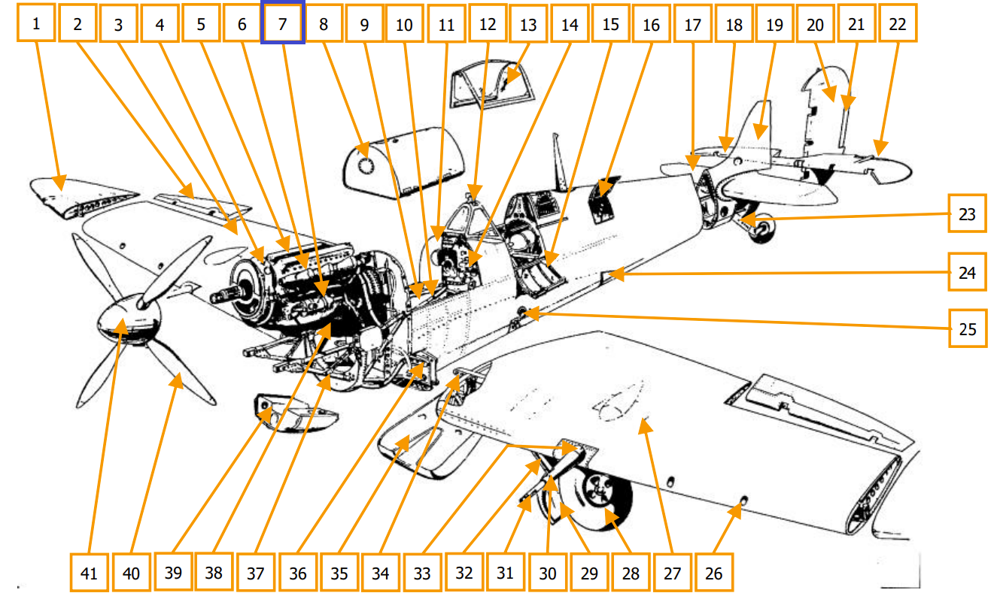
(수퍼마린 스핏파이어의 구조도. 윗 그림 중 7번 항목이 바로 generator.)
그러나 그런 발전기(generator)는 전기 많이 먹는 레이더를 운용할 전기를 만들기에는 역부족. 그러나 천만다행으로, WW2 즈음해서는 육군용 트럭과 지프 등에서도 고장이 잘 나고 효율이 떨어지는 제너레이터를 개량해달라는 요구가 빗발쳤기 때문에, 안정적인데다가 크기와 무게 대비 전력 생산량이 뛰어난 차량용 얼터네이터 개발이 촉진됨. 이건 항공기에는 더욱 중요한 문제. 무거운 발전기 대신 가볍고 효율 좋은 얼터네이터를 항공기에 사용하기 시작한 것도 WW2 때부터. 얼터네이터에서 만들어진 교류를 직류로 바꾸기 위해서 당시엔 진공관 다이오드(diode)로 된 정류기(rectifier)를 사용 (아래 그림)
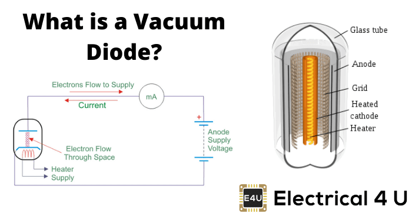
(진공관 다이오드 정류기. 뜨겁게 달궈진 음극(cathode)에서 전자가 튀어나와 양극(anode)로 날아가 전류가 흐르게 되는데, 교류에 의해 순간적으로 양극이 음극으로 바뀌면 전자의 흐름이 멈추므로 교류가 결국 직류로 바뀜)
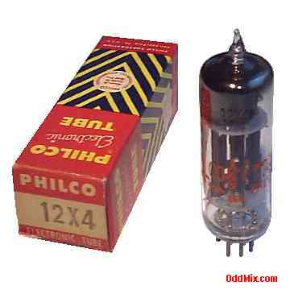
(그렇다면 1940~50년대 자동차에는 정말 얼터네이터의 교류를 직류로 바꾸기 위해 엔진 속에 진공관이 들어있었을까? 좀 믿어지지 않아 찾아보니 실제로 그랬음. 윗 사진이 당시 자동차에 사용되던 진공관 다이오드 정류기인 Philco 12X4 Full-Wave Rectifier.)
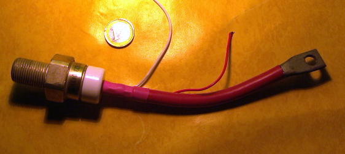
(그러나 자동차 엔진에 진공관이 들어있던 시절은 그리 오래 가지 않았음. 1950년대 후반에 실리콘 기반의 반도체로 만들어진 정류기, 즉 silicon controlled rectifier가 만들어졌기 때문. 윗 사진은 1957년부터 생산에 들어간 General Electric사의 제품)
영국 공군에서 항공기 탑재용 레이더를 개발하던 "Taffy" Bowen도 1938년 직접 쉐필드(Sheffield)로 날아가 그곳의 전기제품 회사인 Metropolitan-Vickers에 레이더를 위한 항공기용 800-watt짜리 얼터네이터 설계 및 제작을 협의. 그 결과로 전쟁 중 Metropolitan-Vickers사는 13만대가 넘는 얼테네이터를 생산함.
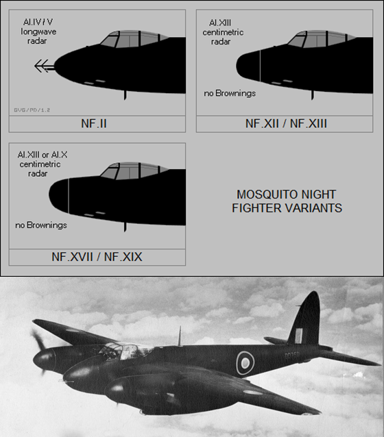
(WW2 당시 연합군-추축군 통틀어 가장 우수한 야간 전투기라고 평가되는 de Havilland Mosquito. 원래 경폭격기였으나 레이더 조작수가 필요한 야간 전투기 특성상 쌍발기를 야간 전투기로 개조하는 일이 많았음. 모스키토의 오른쪽 엔진에는 일반 전기 장치들을 위한 24V 직류 generator가 달려 있었고, 왼쪽 엔진에는 레이더를 위한 별도의 alternator가 달려 있었음. 그림 중 위의 실루엣은 레이더 기술이 발전되면서 점점 짧아지는 레이더 안테나의 형상을 보여주는 장면.)
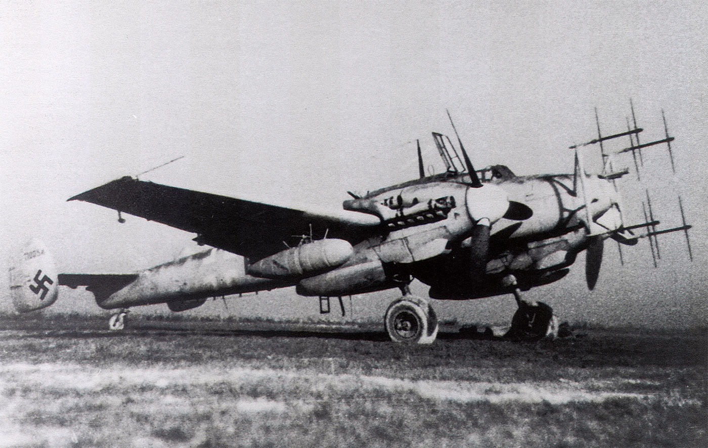
(영국 공군 모스키토의 안테나와 비교되는, 독일 공군 야간 전투기 Bf-110의 레이더 안테나. 사슴 뿔처럼 생겨서 인상적이긴 하지만 저건 뒤떨어진 레이더 기술, 정확하게는 진공관 같은 기초 전기 소재 기술의 낙후성을 보여주는 모습.)
그러나 이런 얼터네이터 등등의 문제는 보웬이 부딪힌 항공기 탑재용 공대공 레이더 개발 전체에 있어서는 그야말로 사소한 문제에 불과했음.